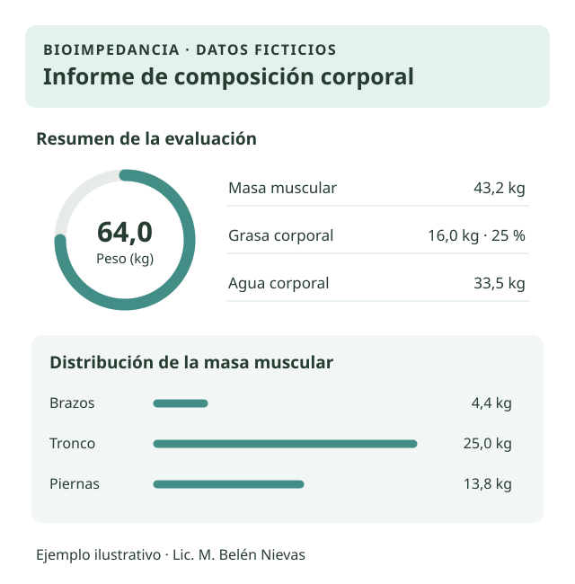

Datos ficticios
Ejemplo de informe
Vista ilustrativa de algunos datos que podés encontrar en un informe de composición corporal.
| Indicador | Valor de ejemplo |
|---|---|
| Peso | 64,0 kg |
| Masa muscular | 43,2 kg |
| Grasa corporal | 16,0 kg · 25 % |
| Agua corporal | 33,5 kg |
Te entrego el informe detallado de tu evaluación por WhatsApp en el momento.
